verkefni 2
Parametrísk hönnun og tölvustuddur skurður
Tölvustuddur skurður
Undirbúningur
Ég byrjaði á því að kynna mér verkefnalýsinguna og verkefnið með því að horfa á myndbönd frá kennara um verkefnalýsingu fyrir Verkefni 2 og horfði síðan á tvö myndbönd frá leiðbeinanada Jóni Þóri, Kassi og Parametrar. Ég horfði síðan á annað myndband frá Hobbyist Maker til þess að læra hvernig fingur tengingar virka. Ég ákvað síðan að byrja á því að klára að búa til límmiðann fyrst. Ég leitaði mér innblástrar á Pinterest og skoðaði heimasíður fyrrum nemenda. Þar næst hlóð ég niður Inkscape og leitaði af myndum sem ég vildi hafa sem límmiða. Ég valdi síðan Palestínu þar sem ég er hálf palestínsk og væri til í að hafa rætur mínar sýnilegar á tölvunni minni.Ferlið
Inkscape
- Opnaði myndina mína frá Pinterest inn í Inkscape.
- Valdi view og síðan outline til þess að sjá útlínur.
- Valdi alla myndina mína, hægrismellti og valdi Trace Bitmap til þess að búa til útlínur sem skera átti eftir.
- dróg PNG myndina til hliðar og eyddi henni.
- Breytti síðan stroke og fill stillingunum, eftirfarandi:
- Fill: no paint
- Stroke paint: Flat color
- Stroke style: width = 0.02 mm
Hér fyrir neðan má sjá hvernig þetta leit út:
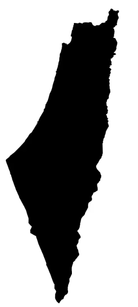
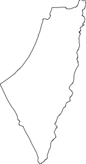
{kind=link}
Ég vistaði síðan svg skrána í Inkscape og exportaði í pdf. Þá var þetta tilbúið fyrir vínylskerann. Hér fyrir neðan má sjá myndir af ferlinu:


Lokaútkoma

Parametrísk hönnun
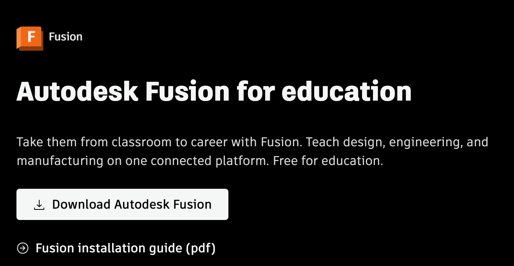
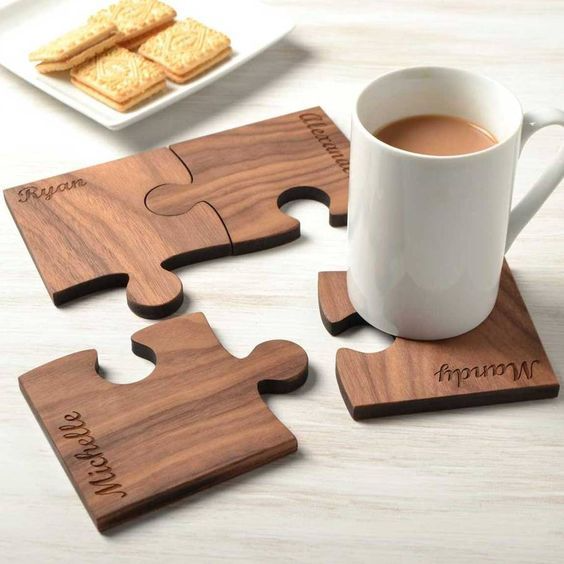
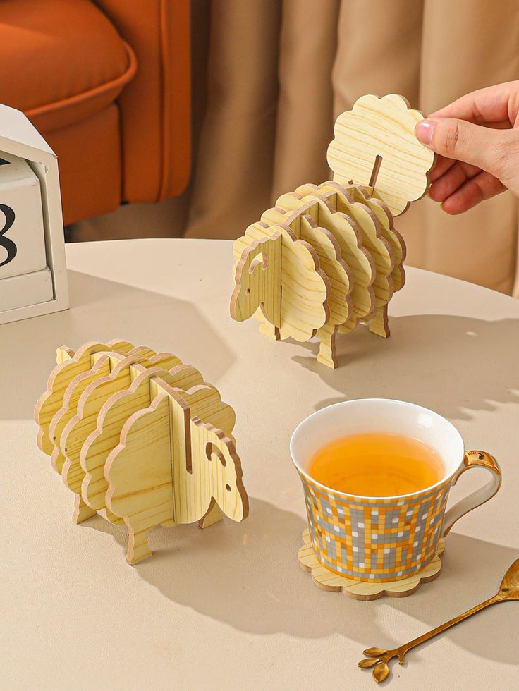
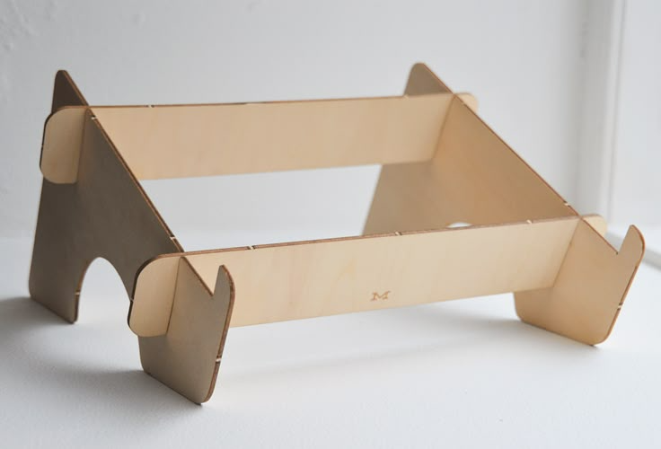
Fleiri myndir af ferlinu má sjá hér að neðan. Þar má sjá hvernig
Þetta leit út beint eftir skurð, ásamt því hvernig mælingar voru framkvæmdar.
(13,46 − 13,3) / 10 = 0,016 cm = 0,16 mm
Niðurstaðan sýndi að þvermál geislans fyrir akrýlinn var þá 0,16 mm. Þessi tala er
notuð sem viðmið þegar kerfið er sett upp fyrst í Fusion.
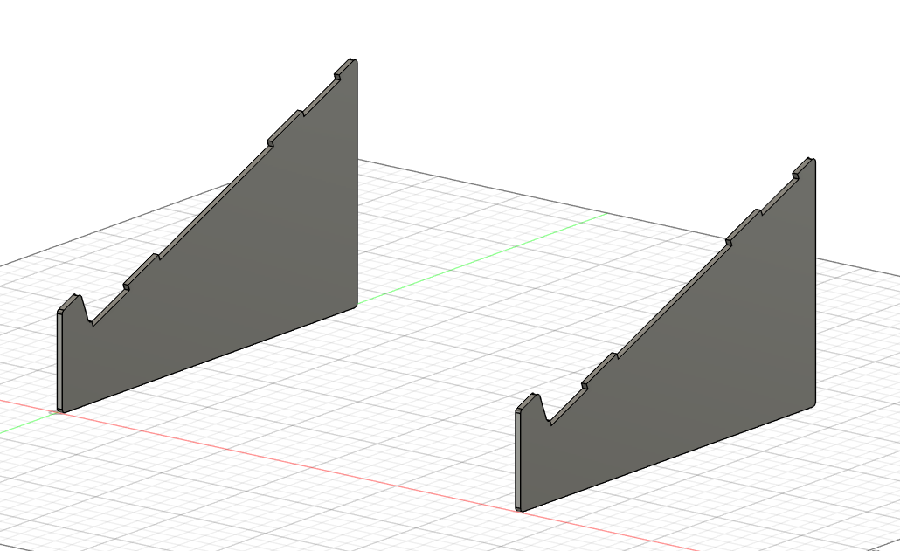 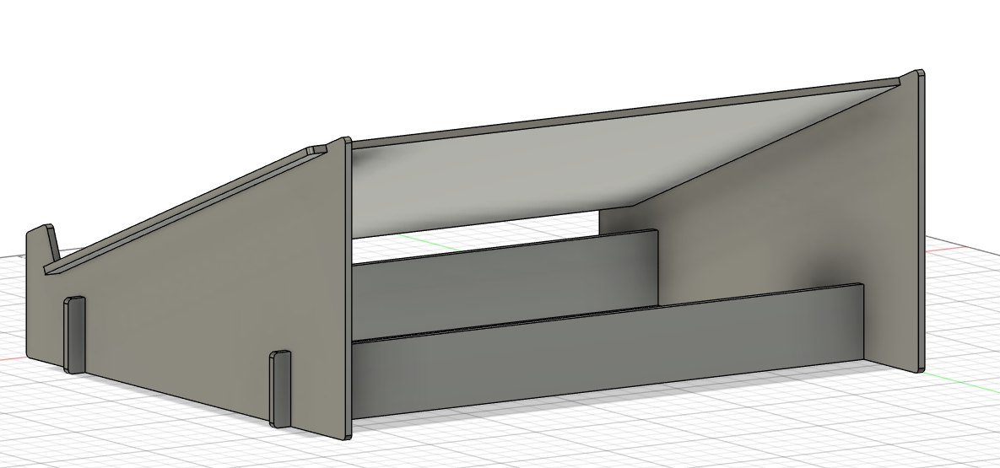 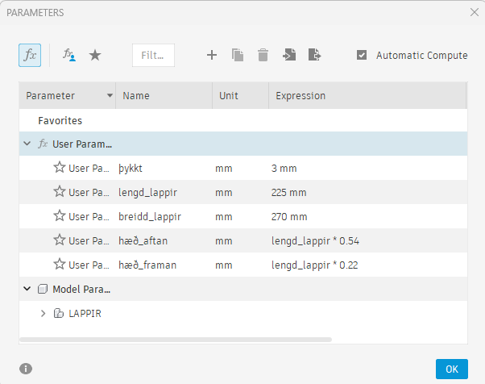
Eftir þetta fór ég að fletja tölvustandinn út með því að fylgja þessu myndbandi:
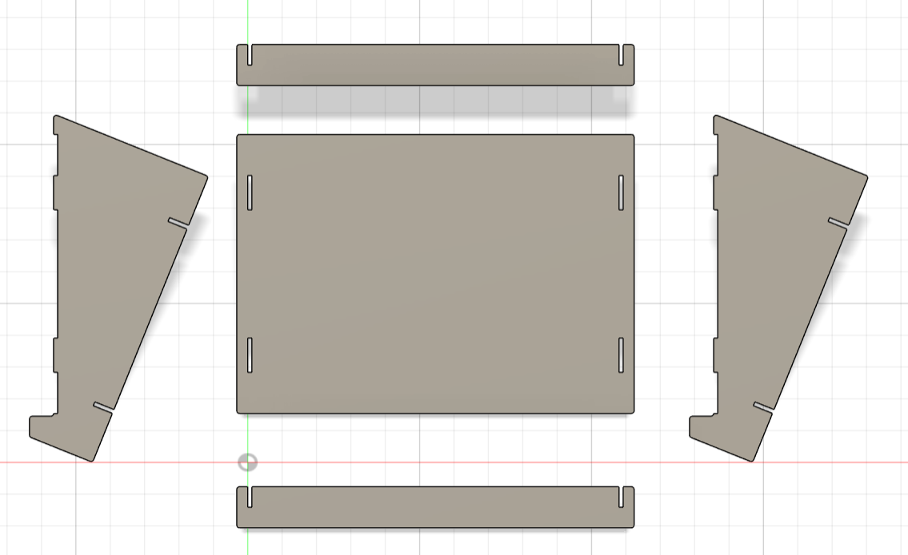 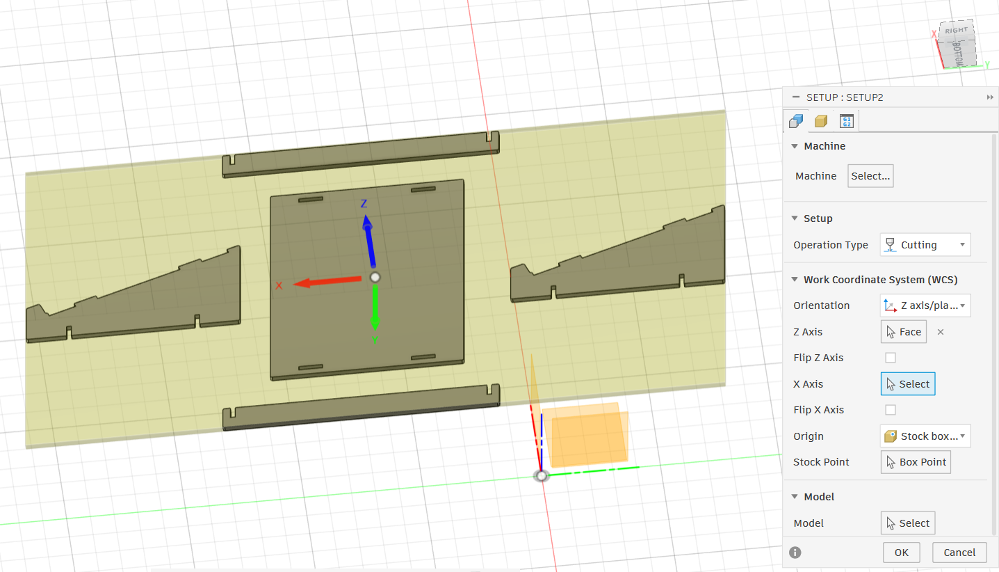 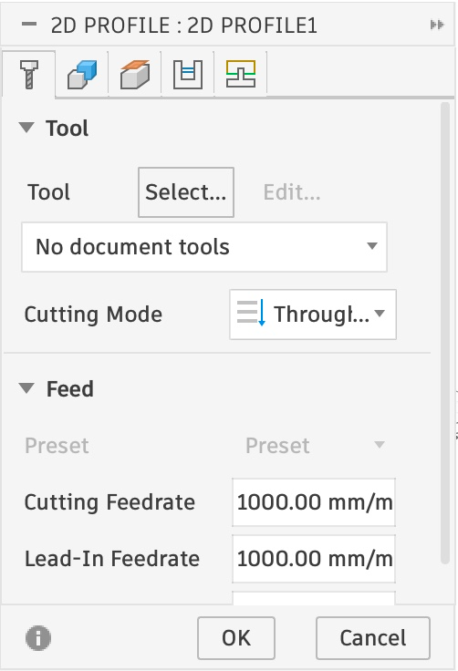 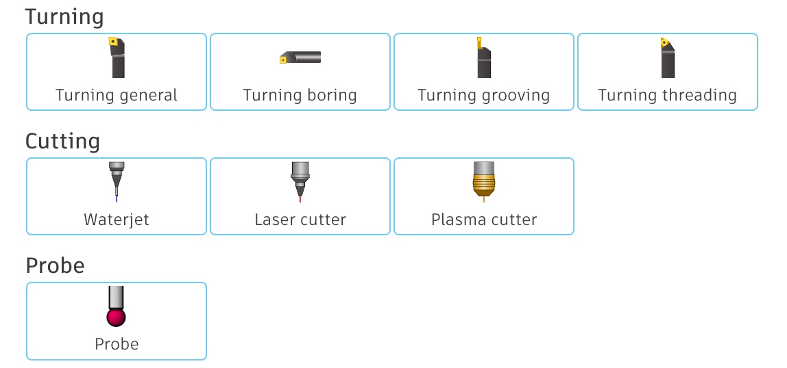 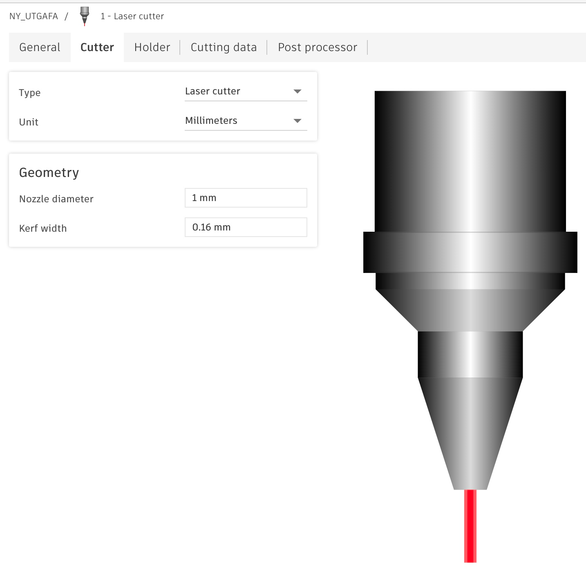
Þegar ég var loksins búin að teikna hlutinn upp á nýtt þá leit þetta svona út, þegar búið var að fletja úr hlutnum í
annað sinn. Hér sést að annar hlutur var valinn sem viðmið, hlutur sem var beinn en ekki við ákveðin halla.
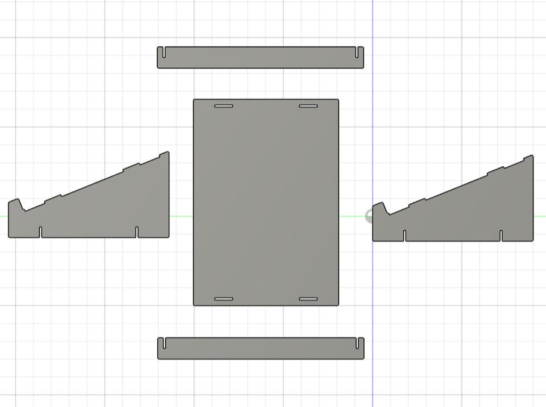 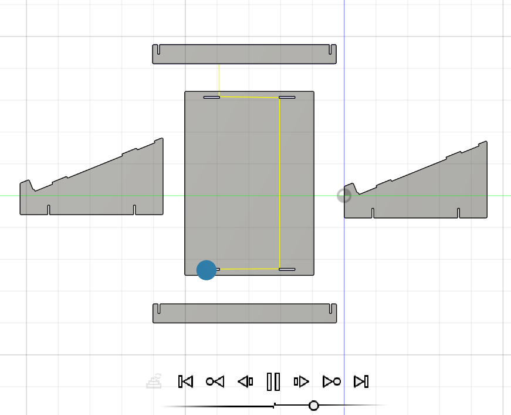 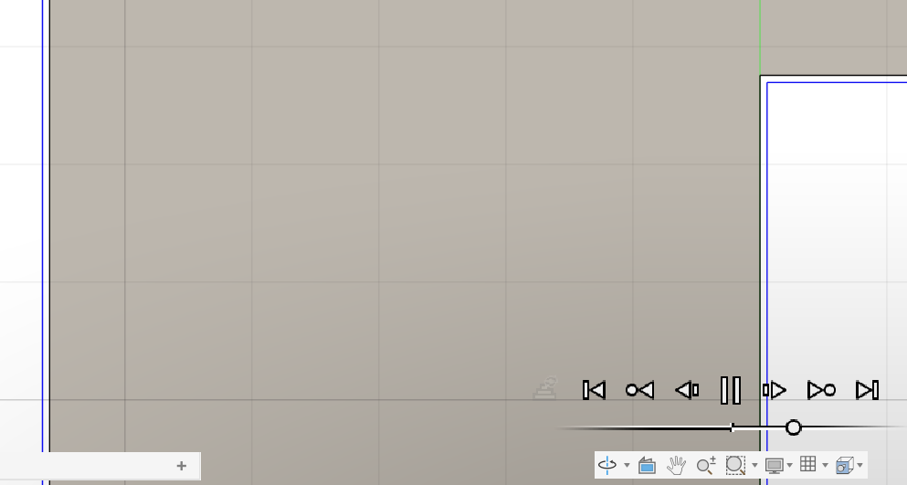
Myndirnar fyrir ofan sýna aðra tilraun á því að fletja hlutinn út ásamt simulation
tólinu, sem sýnir hvernig geislinn mun skera út hlutinn. Einnig má sjá nærmynd af því þótt
hún sjáist ekki rosalega vel.
Hér má skoða tvö 3D líkön í Fusion. Annað þeirra er samsetningin (geirneglt módel) og hitt er flatt út. Hægt er að snúa þeim, færa til og zooma inn til að skoða smáatriði betur.
Samsetning Flatt út
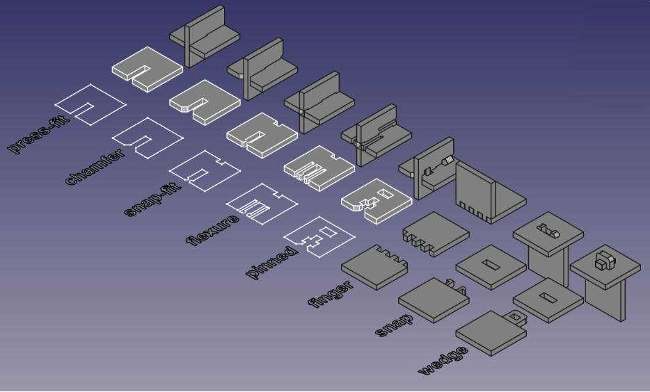
Ég fylgdi sömu skrefum í Inkscape og ég nefndi fyrir ofan til þess
að gera þetta klárt fyrir geislaskerann.
Undirbúningur
Ferlið
Kerf prófun
Áður en ég byrjaði að hanna hlutinn þurfti að ákvarða kerfið. Athugun á kerfi geislaskerans var framkvæmd sem hópverkefni. Prófunin fór þannig fram að
teiknaðir voru 9 kassar sem skilgreindu feril geislaskerans. Hér að neðan má sjá alls kyns myndir af þessu ferli.


Hönnun
Ég byrjaði á því að teikna lappirnar í Fusion sem má sjá hér að neðan en komst síðan að því að parametrarnir
væru ekki að virka í rótinni (e. root), þar sem ég bjó til components og parametrarnir virkuðu bara í hverju og einu componenti.
Ég reyndi að laga þetta svo ég þyrfti ekki að byrja aftur en ég komst
því miður ekki að lausn. Því þurfti ég að byrja aftur og sleppa því að búa alltaf til “new component” og gera bara sketch í staðinn.
Þá virkaði þetta sem betur fer, en tók því miður dálítið langan tíma að fatta þessi mistök. Fyrir neðan má sjá
myndir af hverjum parti sem bætist síðan við, ásamt parametra stillingum.

Fusion líkan
Inkscape vinna
Eftir að hönnunin og setupið var klárt gat ég loksins eftir langa og stranga vinnu í Fusion fært þetta yfir í Inkscape með því að fylgja myndbandinu hans Jón Þórs.
Hér fyrir neðan má sjá eftirfarandi skref í Inkscape:
Prófun
Næst saveaði ég þetta sem svg og fór að gera test!
Ég bjó til nýtt copy af fusion skjalinu sem var flatt út og fór að vinna í því. Ég bjó til eins litla hluti og ég gat,
sem innihéldu tengipunktana sem ég þurfti að prófa áður en ég skar út heilu partana. Tengingarnar sem tölvustandurinn
notaði voru press fit og finger-tengingar. Myndir af þessum tengingum má sjá hér að neðan, ásamt test pörtunum í Fusion.